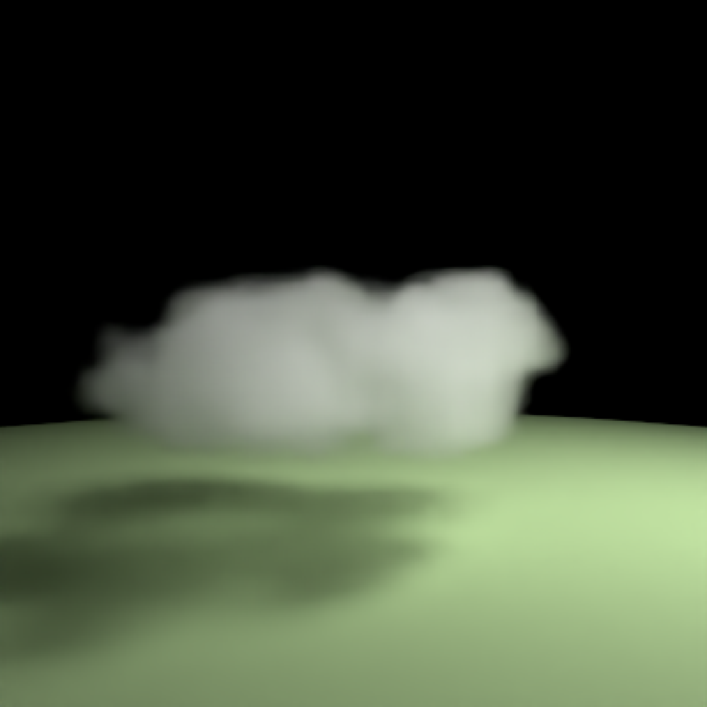
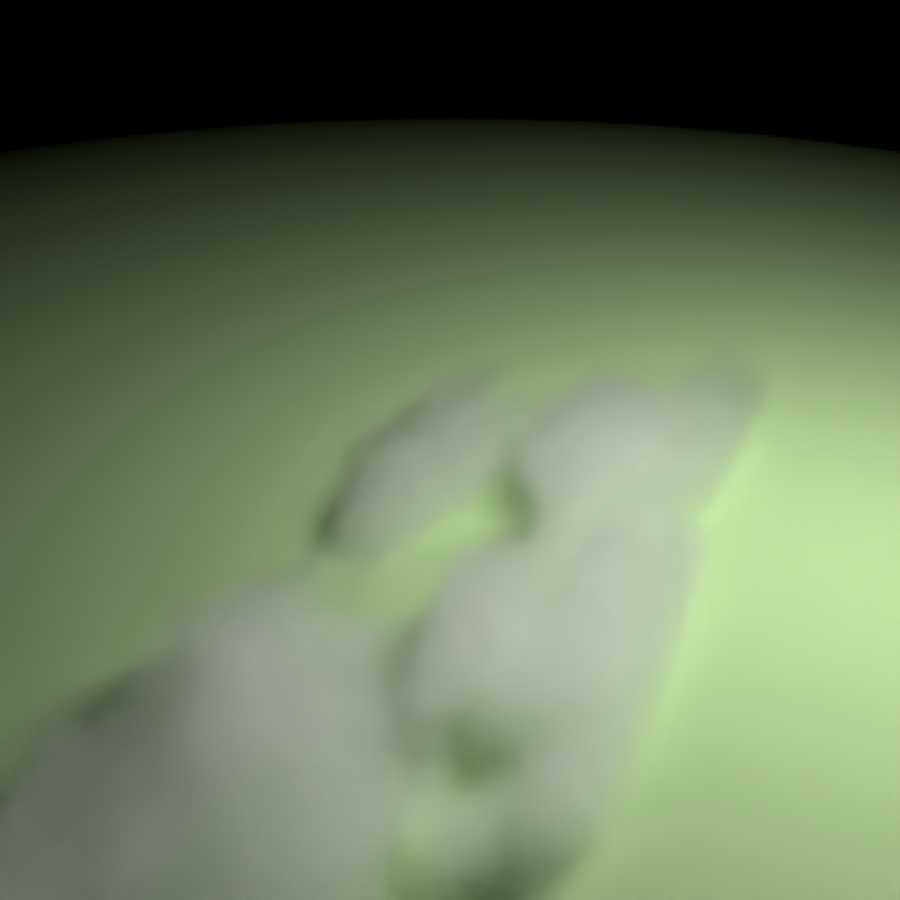
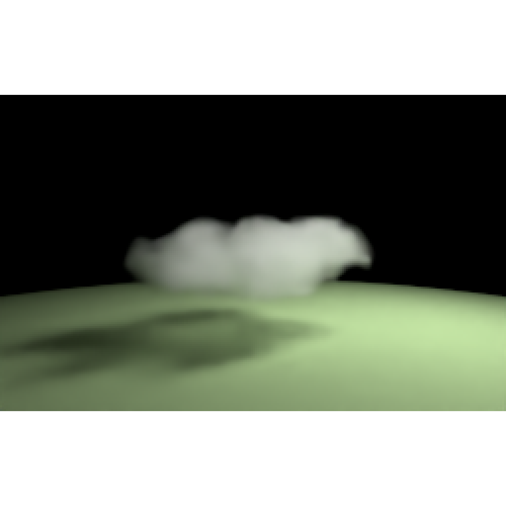
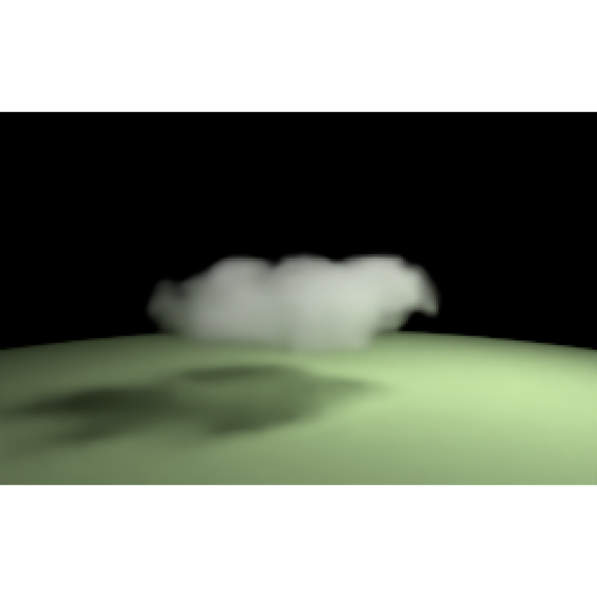
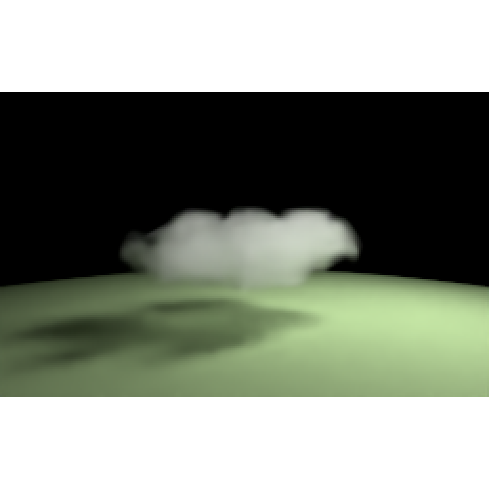
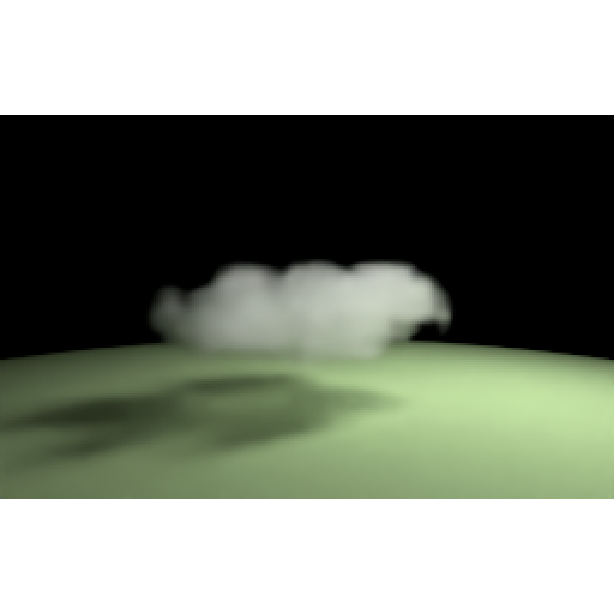

Create a cloud volume with billowing Perlin-noise density. Add it to a scene
with add_object(); rendering automatically selects integrator_type = "nee". Requires the
suggested package ambient to generate the density field.
cloud(
x = 0,
y = 0,
z = 0,
width = 100,
height = 25,
depth = 75,
style = c("cumulus", "stratus"),
seed = 42,
resolution = 128,
coverage = 0.5,
detail = 0.35,
optical_depth = 8,
g = 0.65,
angle = c(0, 0, 0),
order_rotation = c(1, 2, 3),
scale = c(1, 1, 1),
t = 0,
animation_seed = 1,
haze = FALSE,
haze_density_threshold = 0.05
)Default 0. x-coordinate of the center of the cloud's bounding box.
Default 0. y-coordinate of the center of the cloud's bounding box.
Default 0. z-coordinate of the center of the cloud's bounding box.
Default 100. Width of the cloud volume along its local x-axis.
Default 25. Height of the cloud volume along its local y-axis.
Default 75. Depth of the cloud volume along its local z-axis.
Default c("cumulus", "stratus"). Cloud shape. "cumulus" creates
rounded bodies with billowing tops; "stratus" creates a shallow cloud bank.
Default 42. Nonnegative integer seed for the cloud shape.
Generating a cloud preserves the caller's random-number state.
Default 128. Integer number of density cells along the
longest dimension, at least 24. Other dimensions follow the aspect ratio,
with at least eight cells each. Higher values add detail and use more memory.
Default 0.5. Number between zero and one controlling the
size and connection of cloud bodies. Zero does not make the volume empty;
use optical_depth = 0 for a non-scattering cloud.
Default 0.35. Number between zero and one controlling the
strength of small-scale Perlin detail.
Default 8. Nonnegative extinction through a fully
dense column of length height. Actual optical depth depends on the density
along the ray. Extinction is 99.9% scattering and 0.1% absorption.
Default 0.65. Henyey-Greenstein scattering asymmetry, strictly
between -1 and 1. Positive values scatter forward along the light direction.
Default c(0, 0, 0). Rotation in degrees around the x, y, and z
axes, applied in the order specified by order_rotation.
Default c(1, 2, 3). Order of rotations, referring to
x, y, and z. Must be a permutation of c(1, 2, 3).
Default c(1, 1, 1). Nonzero scale factors along x, y, and z.
A single value scales uniformly. Scales the density field and its boundary
together, retaining extinction per world-space unit.
Default 0. Continuous, dimensionless evolution time.
Small changes gently reshape the broad and fine density features without
moving the bounding box. Zero reproduces the original static cloud.
Keep both seeds fixed and increase this value between frames; for example,
use seq(0, 1, length.out = 30) for a gentle transition. Negative times work.
Default 1. Nonnegative integer seed for the local
evolution, independent of the shape's seed. Changing it selects a different
evolution of the same cloud; it has no effect at t = 0.
Default FALSE. Include clear-air atmospheric haze inside the
cloud boundary when enabled by sky_light(). The default omits haze
throughout the boundary, including empty cells, while retaining cloud
scattering and altitude-dependent illumination. Set TRUE to enable haze
subject to haze_density_threshold. Omitting haze is an approximation most
useful for dense clouds at high altitude; thin clouds and wispy edges can
show larger differences. See homogeneous_medium().
Default 0.05. With haze = TRUE, omit haze
only where the interpolated cloud density is at least this positive value.
When haze is enabled, the default retains it in empty space and regions
below density 0.05. Cloud density ranges from zero to one. NULL enables
haze throughout the boundary. Ignored with haze = FALSE. This is a
density threshold, not an opacity threshold; optical_depth still controls
the strength of the cloud's scattering. See homogeneous_medium().
A single-row ray_scene containing an invisible box with an attached
cloud density grid.
The local bounding box is centered at zero before object transforms,
spanning -c(width, height, depth) / 2 to c(width, height, depth) / 2.
The density fades to vacuum at all six faces; the box has no visible surface.
An unrotated, unscaled cloud with base altitude b has y = b + height / 2.
The center describes the box, not the irregular density's center of mass.
Positions and dimensions use scene units. Setting the dimensions rebuilds
the field and normalizes extinction by height. Applying scale stretches
the existing volume without renormalizing extinction, so stretching it along
a ray increases that ray's optical depth. Standard group_objects(),
animate_objects(), and create_instances() operations transform the cloud
using the same object machinery as other closed shapes.
Evolution adds small, bounded perturbations to the broad and fine noise
fields using separately seeded four-dimensional simplex noise (space and
time). Subtracting the perturbation at time zero anchors the original shape.
Broad domes, the base profile, and edge fades stay fixed while local density
swells and erodes. Evolution is procedural rather than a fluid simulation;
cloud mass is not conserved. Use x, y, and z for bulk movement.
Rebuild the cloud with a new t value for each rendered frame.
animate_objects() animates its transform; it does not evolve the density
within a frame or during the shutter interval.
Cloud scattering is separate from sky_light()'s clear-air atmospheric haze.
Avoid intersecting, non-nested cloud boxes, including their empty edge cells:
these are separate medium boundaries. Use one larger field for a connected
bank. The attached grid_medium() is stored in
object$shape_info[[1]]$medium for further density or scattering adjustments.
# The default cloud is centered at the origin. Raise a cloud by its center
# to put its base above the ground, then rotate the entire density field.
puff = cloud(y = 20, width = 60, height = 20, depth = 40,
angle = c(0, 25, 0), resolution = 64, optical_depth = 4)
scene = generate_ground(material = diffuse("#699447")) |>
add_object(puff) |>
add_object(sphere(x = -50, y = 80, z = -30, radius = 15,
material = light(intensity = 40)))
render_scene(scene, lookfrom = c(80, 35, -100), lookat = c(0, 20, 0),
fov = 35, integrator_type = "nee", samples = 64,
clamp_value = Inf, aperture = 0)

# Reuse the shape at another position, or change the style and its detail.
bank = cloud(x = 0, y = w0, z = 6, style = "stratus", seed = 17,
width = 80, height = 10, depth = 50,
coverage = 0.7, detail = 0.2, optical_depth = 6, g = 0.6)
#> Error: object 'w0' not found
scaled = cloud(scale = c(1.5, 1, 0.75), angle = c(10, 30, 0),
order_rotation = c(2, 1, 3), resolution = 64)
generate_ground(material = diffuse("#699447")) |>
add_object(bank) |>
add_object(sphere(x = -50, y = 80, z = -30, radius = 15,
material = light(intensity = 40))) |>
render_scene(lookfrom = c(80, 100, -100), lookat = c(0, 20, 0),
fov = 35, integrator_type = "nee", samples = 64,
clamp_value = Inf, aperture = 0)
#> Error: object 'bank' not found
generate_ground(material = diffuse("#699447")) |>
add_object(scaled) |>
add_object(sphere(x = -50, y = 80, z = -30, radius = 15,
material = light(intensity = 40))) |>
render_scene(lookfrom = c(80, 100, -100), lookat = c(0, 20, 0),
fov = 35, integrator_type = "nee", samples = 64,
clamp_value = Inf, aperture = 0)

# Keep seeds and position fixed to evolve the cloud locally over time.
# Rebuilding a frame at the same t value always gives the same cloud.
for (frame in 0:3) {
set.seed(2026)
generate_ground(material = diffuse("#699447")) |>
add_object(cloud(y = 20, width = 60, height = 20, depth = 40,
seed = 42, t = frame / 3, animation_seed = 17,
resolution = 64, optical_depth = 4)) |>
add_object(sphere(x = -50, y = 80, z = -30, radius = 15,
material = light(intensity = 40))) |>
render_scene(lookfrom = c(80, 35, -100), lookat = c(0, 20, 0),
width = 256, height = 160, fov = 35, integrator_type = "nee",
samples = 64, iso = 100, aperture = 0)
}



